Last year, I spent a considerable amount of time attempting to simulate stock price movements using a monte carlo simulation. The goal was to use the simulation in order to pick the stocks most likely to move upwards. It seems like this simulation could be used to fuel any model: picking winners, losers, or any number of very specific targets.
This document is intended to remind myself (and others) of what I did and how I did it. Feedback is welcome.
How it Worked
Get historical data on stock or crypto & calculate daily movement (percent change)
Create a Monte Carlo simulation of the stock using values chosen from the EVD
Create a model using features based on the Monte Carlo simulation
Walking Through the Steps
For this example, I will use ETH-USD.
Step 1: Get Historical Data & Calculate Daily Movement
Code
dat <-get_dat("ETH-USD")dat <- dat %>%mutate(last_close =lag(Close, 1),percent_change = (Close - last_close) / last_close) %>%select(symbol, Date, Close, last_close, percent_change)ggplot(dat, aes(x = Date, y = Close)) +geom_line() +scale_y_continuous(labels =dollar_format()) +ggtitle("Price of ETH since November 2017") +theme(panel.background =element_blank(),panel.grid =element_line(color ="light gray"),axis.ticks =element_blank(),panel.border =element_rect(fill =NA, color ="black"))
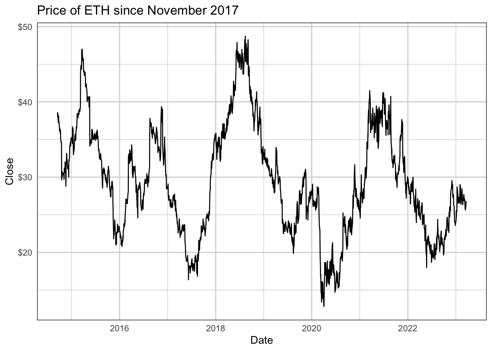
Notice that while the price seems to be much more volatile since 2021, this is actually an illusion due to the higher price. The percent change (below), seems to be relatively constant thoughout the time period.
Code
ggplot(dat, aes(x = Date, y = percent_change)) +geom_line(linewidth =0.25) +scale_y_continuous(labels =percent_format()) +ggtitle("Percent Change in Price of ETH since November 2017") +ylab("Percent Change in Price (Close to Close)") +theme(panel.background =element_blank(),panel.grid =element_line(color ="light gray"),axis.ticks =element_blank(),panel.border =element_rect(fill =NA, color ="black"))
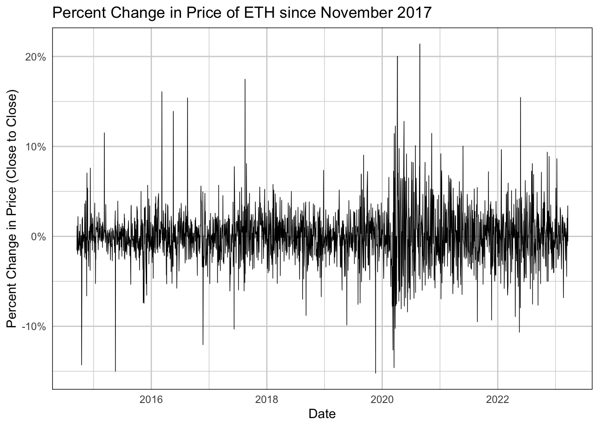
Step 2: Modeling the Distribution
The created distribution, as desired, is very similar to the actuals, but with slightly thicker tails. This allows for more volatility to be seen in the model, especially on the downside. I intentionally wanted to be bearish (my bets were all bullish) as a hedge.
Actual data are on the left, modeled data are on the right.
Code
evd_dist <-get_evd(dat, sim_start_date)act <-ggplot(dat, aes(x = percent_change)) +geom_histogram(fill ="navy", color ="white") +scale_x_continuous(limits =c(min(evd_dist$percent_change) -0.05, max(evd_dist$percent_change) +0.05), labels =percent_format()) +scale_y_continuous(labels =comma_format()) +ggtitle("Histogram of Percent Change in\nPrice of ETH since November 2017") +xlab("Percent Change in Price (Close to Close)") +theme(panel.background =element_blank(),panel.grid =element_line(color ="light gray"),axis.ticks =element_blank(),panel.border =element_rect(fill =NA, color ="black"))mod <-ggplot(evd_dist, aes(x = percent_change)) +geom_histogram(fill ="navy", color ="white") +scale_x_continuous(limits =c(min(evd_dist$percent_change) -0.05, max(evd_dist$percent_change) +0.05), labels =percent_format()) +scale_y_continuous(labels =comma_format()) +ggtitle("Histogram of Modeled Percent\nChange in Price of ETH") +xlab("Percent Change in Price (Close to Close)") +theme(panel.background =element_blank(),panel.grid =element_line(color ="light gray"),axis.ticks =element_blank(),panel.border =element_rect(fill =NA, color ="black"))gridExtra::grid.arrange(act, mod, nrow =1)
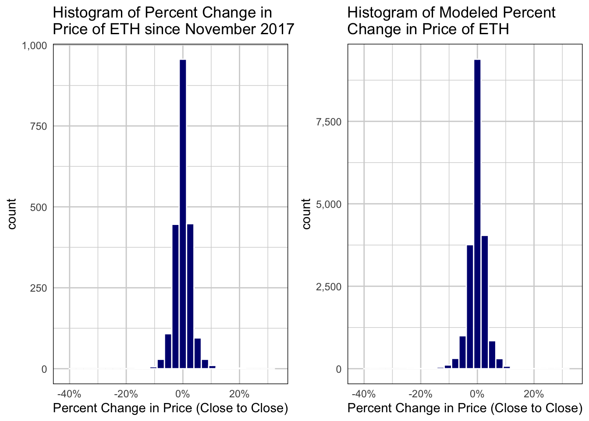
Code
act <-ggplot(dat, aes(x = percent_change)) +geom_boxplot() +scale_x_continuous(limits =c(min(evd_dist$percent_change) -0.05, max(evd_dist$percent_change) +0.05), labels =percent_format()) +scale_y_continuous(labels =comma_format()) +ggtitle("Boxplot of Percent Change in\nPrice of ETH since November 2017") +xlab("Percent Change in Price (Close to Close)") +coord_flip() +theme(panel.background =element_blank(),panel.grid.major.y =element_line(color ="light gray"),panel.grid.major.x =element_blank(),axis.ticks =element_blank(),axis.text.x =element_blank(),panel.border =element_rect(fill =NA, color ="black"))mod <-ggplot(evd_dist, aes(x = percent_change)) +geom_boxplot() +scale_x_continuous(limits =c(min(evd_dist$percent_change) -0.05, max(evd_dist$percent_change) +0.05), labels =percent_format()) +scale_y_continuous(labels =comma_format()) +ggtitle("Boxplot of Modeled Percent\nChange in Price of ETH") +xlab("Percent Change in Price (Close to Close)") +coord_flip() +theme(panel.background =element_blank(),panel.grid.major.y =element_line(color ="light gray"),panel.grid.major.x =element_blank(),axis.ticks =element_blank(),axis.text.x =element_blank(),panel.border =element_rect(fill =NA, color ="black"))gridExtra::grid.arrange(act, mod, nrow =1)
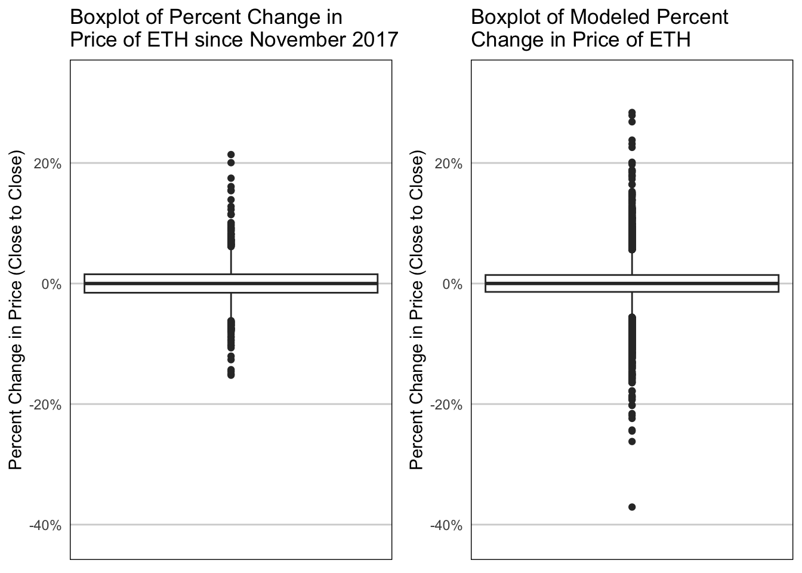
Step 3: The Monte Carlo Simulation
A Monte Carlo simulation allows us to create alternative futures randomly. The idea is that if you simulate enough times, you’ll get an idea of what is possible and what can be expected (read: more likely to occur).
This first plot shows a single random future generated. If the actual price (black) wasn’t plotted, too, one could be fooled into thinking this “future” actually happened.
Code
start_date <- dat %>%filter(Date == sim_start_date) %>%pull(Date)start_price <- dat %>%filter(Date == sim_start_date) %>%pull(Close)mc_dat <-tibble(Date =seq.Date(start_date, Sys.Date() -days(1), by ="day"),weekday =weekdays(Date)) %>%mutate(perc_change =c(start_price, sample(evd_dist$percent_change, size =length(Date) -1, replace =TRUE) +1),closing_price =cumprod(perc_change))plot_dat <- dat %>%left_join(mc_dat, by ="Date") %>%filter(Date >=Sys.Date() -months(4)) plot_dat <- dat %>%left_join(mc_dat, by ="Date") %>%filter(Date >=Sys.Date() -months(4)) ggplot(plot_dat, aes(x = Date)) +geom_line(aes(y = Close)) +geom_line(aes(y = closing_price), color ="navy", alpha =0.5) +ggtitle("Creating a Singular Alternative Future for the 'next' 30 days",subtitle =paste0("Simulation begins on ", format(sim_start_date, "%m/%d"),"\nActual price is black; simulated price is navy")) +scale_y_continuous(labels =dollar_format()) +theme(panel.background =element_blank(),panel.grid.major.y =element_line(color ="light gray"),panel.grid.major.x =element_blank(),axis.ticks =element_blank(),panel.border =element_rect(fill =NA, color ="black"))
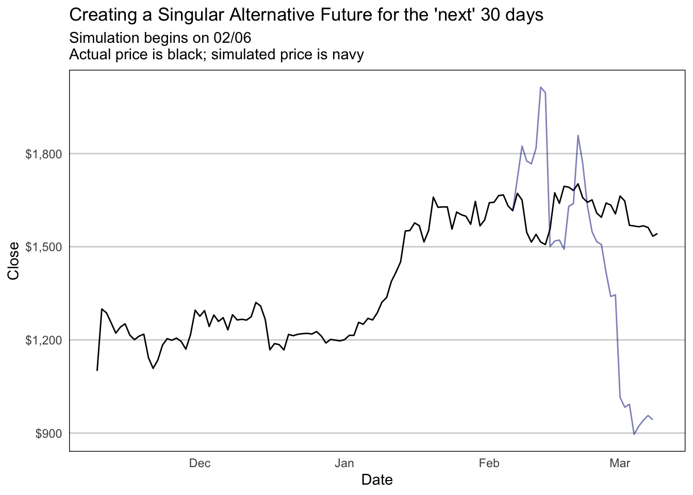
When we plot 10,000 alternative futures on the same graph with the actual prices, a unique thing happens. Our actual price comes very close to the median predicted “future.” This may be the most “likely” outcome, but it shouldn’t be the “expected” outcome (see CMCSA below for a counter example).
Code
num_sims <-10000mc_dat <-tibble(Date =rep(seq.Date(start_date, Sys.Date() -days(1), by ="day"), num_sims),weekday =weekdays(Date), ) num_days <-dim(mc_dat)[1] / num_simsmc_dat_wide <- mc_dat %>%mutate(rnum =row_number(), sample =rep(1:num_sims, each = num_days),perc_change =sample(evd_dist$percent_change, size =length(Date), replace =TRUE) +1,perc_change =ifelse(rnum %% num_days ==1, start_price, perc_change)) %>%select(Date, sample, perc_change) %>%pivot_wider(names_from = sample, values_from = perc_change) cprod <- mc_dat_wide %>%select(where(is.numeric)) %>%map_dfc(cumprod)mc_dat_final <- cprod %>%mutate(Date = mc_dat_wide$Date) %>%pivot_longer(!Date, names_to ="sample", values_to ="closing_price")plot_dat <- dat %>%left_join(mc_dat_final, by ="Date") %>%filter(Date >=Sys.Date() -months(4)) ggplot(plot_dat, aes(x = Date)) +geom_line(aes(y = closing_price, group = sample), color ="navy", alpha =0.15) +geom_line(aes(y = Close)) +ggtitle("Creating 10,000 Alternative Futures for the 'next' 30 days",subtitle =paste0("Simulation begins on ", format(sim_start_date, "%m/%d"),"\nActual price is black; simulated price is navy")) +scale_y_continuous(labels =dollar_format()) +theme(panel.background =element_blank(),panel.grid.major.y =element_line(color ="light gray"),panel.grid.major.x =element_blank(),axis.ticks =element_blank(),panel.border =element_rect(fill =NA, color ="black"))
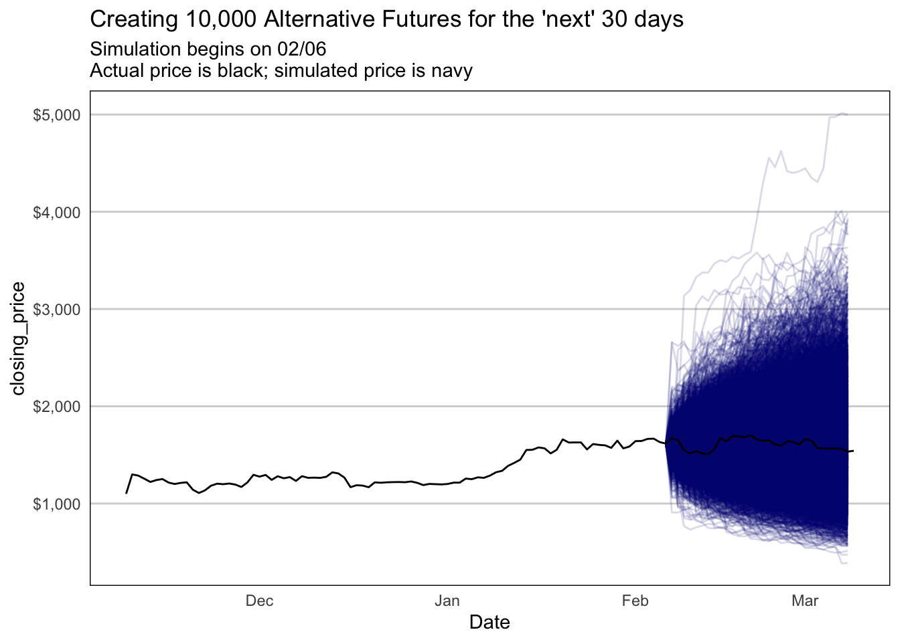
This is not to say that it is “correct.” Every time the simulation is rerun, the randomness of the experiment changes things slightly. Below you can see the final experimental prices for the 10000 simulations compared to the actual final price of ETH.
Code
hist <-ggplot(plot_dat[plot_dat$Date ==Sys.Date() -days(1), ], aes(x = closing_price)) +geom_histogram(fill ="navy", color ="white") +geom_vline(aes(xintercept = Close), color ="red") +ggtitle("Histogram of 10,000 Alternative\nFutures final prices",subtitle ="Actual closing price is red line") +xlab("Closing Price") +scale_x_continuous(labels =dollar_format()) +scale_y_continuous(labels =comma_format()) +theme(panel.background =element_blank(),panel.grid.major.y =element_line(color ="light gray"),panel.grid.major.x =element_blank(),axis.ticks =element_blank(),panel.border =element_rect(fill =NA, color ="black"))boxp <-ggplot(plot_dat[plot_dat$Date ==Sys.Date() -days(1), ], aes(x = closing_price)) +geom_boxplot() +geom_vline(aes(xintercept = Close), color ="red") +ggtitle("Boxplot of 10,000 Alternative\nFutures final prices",subtitle ="Actual closing price is red line") +xlab("Closing Price") +scale_x_continuous(labels =dollar_format()) +scale_y_continuous(labels =comma_format()) +theme(panel.background =element_blank(),panel.grid.major.y =element_line(color ="light gray"),panel.grid.major.x =element_blank(),axis.text.y =element_blank(),axis.ticks =element_blank(),panel.border =element_rect(fill =NA, color ="black"))gridExtra::grid.arrange(hist, boxp, nrow =1)
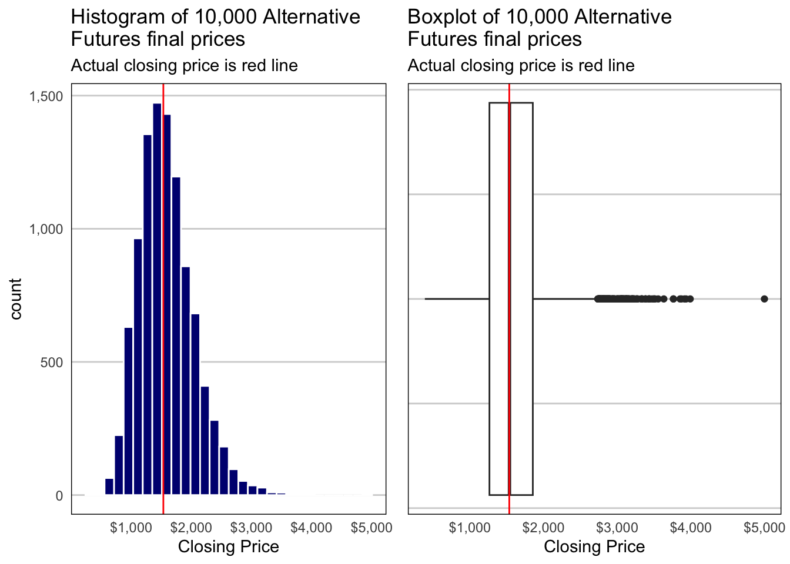
Step 4: Creating a Model to Choose “Winners”
What I haven’t done here but I did in my initial experiment is to run this simulation over many different securities. With that data, I generated a number of different features to be tested in the data. For example:
Range of the simulated final prices
Today’s price compared to the maximum final price
Today’s price compared to the minimum final price
The Interquartile range of the final prices
Etc.
I then used random forests and logistic regression (in hindsight, I may not want to use that models as I’m not sure the assumption requiring independent observations holds true). The target variable was binomial: did the stock go up?
Rerunning the example on CMCSA
Repeating the example on CMCSA to show that the model and idea is robust to different types of securities.
Step 1: Get Historical Data & Calculate Daily Movement
Code
dat <-get_dat("CMCSA")dat <- dat %>%mutate(last_close =lag(Close, 1),percent_change = (Close - last_close) / last_close) %>%select(symbol, Date, Close, last_close, percent_change)ggplot(dat, aes(x = Date, y = Close)) +geom_line() +scale_y_continuous(labels =dollar_format()) +ggtitle("Price of CMCSA since September 2014") +theme(panel.background =element_blank(),panel.grid =element_line(color ="light gray"),axis.ticks =element_blank(),panel.border =element_rect(fill =NA, color ="black"))
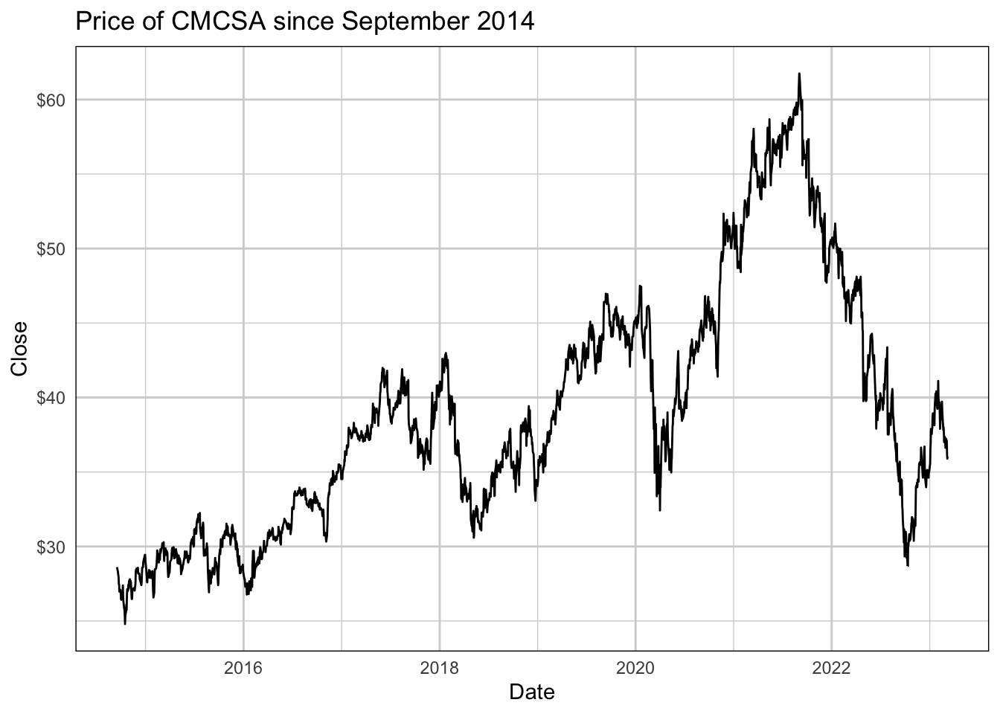
Code
ggplot(dat, aes(x = Date, y = percent_change)) +geom_line(linewidth =0.25) +scale_y_continuous(labels =percent_format()) +ggtitle("Percent Change in Price of CMCSA since September 2014") +ylab("Percent Change in Price (Close to Close)") +theme(panel.background =element_blank(),panel.grid =element_line(color ="light gray"),axis.ticks =element_blank(),panel.border =element_rect(fill =NA, color ="black"))
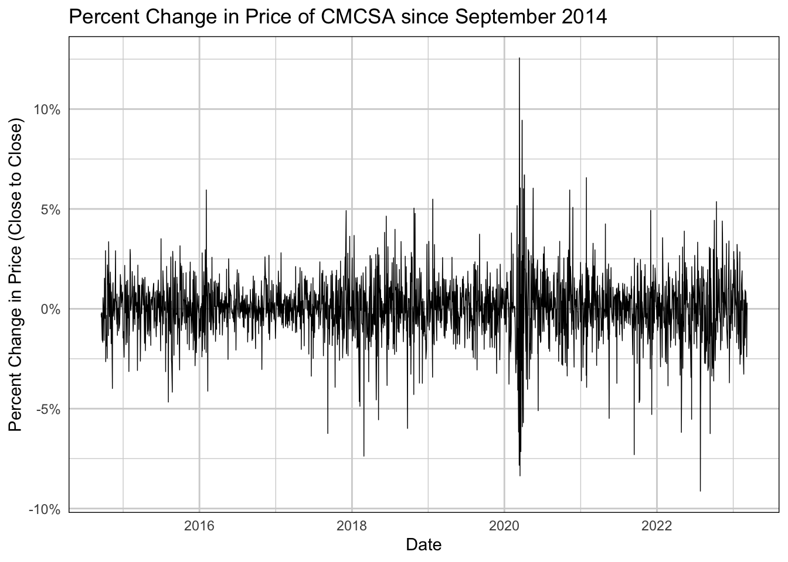
Step 2: Modeling the Distribution
The created distribution, as desired, is very similar to the actuals, but with slightly thicker tails. This allows for more volatility to be seen in the model, especially on the downside. I intentionally wanted to be bearish (my bets were all bullish) as a hedge.
Actual data are on the left, modeled data are on the right.
Code
evd_dist <-get_evd(dat, sim_start_date)act <-ggplot(dat, aes(x = percent_change)) +geom_histogram(fill ="navy", color ="white") +scale_x_continuous(limits =c(min(evd_dist$percent_change) -0.05, max(evd_dist$percent_change) +0.05), labels =percent_format()) +scale_y_continuous(labels =comma_format()) +ggtitle("Histogram of Percent Change in\nPrice of CMCSA since September 2014") +xlab("Percent Change in Price (Close to Close)") +theme(panel.background =element_blank(),panel.grid =element_line(color ="light gray"),axis.ticks =element_blank(),panel.border =element_rect(fill =NA, color ="black"))mod <-ggplot(evd_dist, aes(x = percent_change)) +geom_histogram(fill ="navy", color ="white") +scale_x_continuous(limits =c(min(evd_dist$percent_change) -0.05, max(evd_dist$percent_change) +0.05), labels =percent_format()) +scale_y_continuous(labels =comma_format()) +ggtitle("Histogram of Modeled Percent\nChange in Price of CMCSA") +xlab("Percent Change in Price (Close to Close)") +theme(panel.background =element_blank(),panel.grid =element_line(color ="light gray"),axis.ticks =element_blank(),panel.border =element_rect(fill =NA, color ="black"))gridExtra::grid.arrange(act, mod, nrow =1)
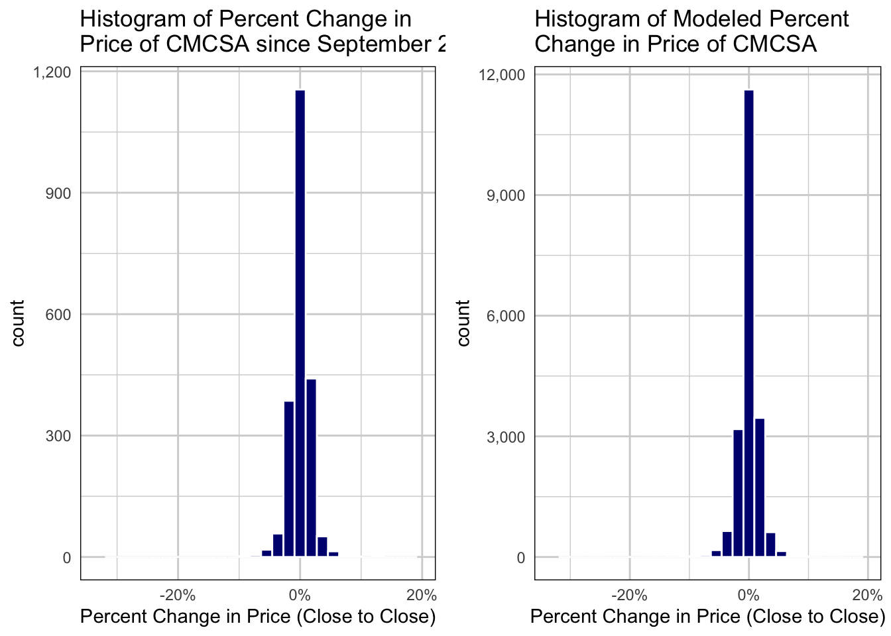
Code
act <-ggplot(dat, aes(x = percent_change)) +geom_boxplot() +scale_x_continuous(limits =c(min(evd_dist$percent_change) -0.02, max(evd_dist$percent_change) +0.02), labels =percent_format()) +scale_y_continuous(labels =comma_format()) +ggtitle("Boxplot of Percent Change in\nPrice of CMCSA since September 2014") +xlab("Percent Change in Price (Close to Close)") +coord_flip() +theme(panel.background =element_blank(),panel.grid.major.y =element_line(color ="light gray"),panel.grid.major.x =element_blank(),axis.ticks =element_blank(),axis.text.x =element_blank(),panel.border =element_rect(fill =NA, color ="black"))mod <-ggplot(evd_dist, aes(x = percent_change)) +geom_boxplot() +scale_x_continuous(limits =c(min(evd_dist$percent_change) -0.02, max(evd_dist$percent_change) +0.02), labels =percent_format()) +scale_y_continuous(labels =comma_format()) +ggtitle("Boxplot of Modeled Percent\nChange in Price of CMCSA") +xlab("Percent Change in Price (Close to Close)") +coord_flip() +theme(panel.background =element_blank(),panel.grid.major.y =element_line(color ="light gray"),panel.grid.major.x =element_blank(),axis.ticks =element_blank(),axis.text.x =element_blank(),panel.border =element_rect(fill =NA, color ="black"))gridExtra::grid.arrange(act, mod, nrow =1)
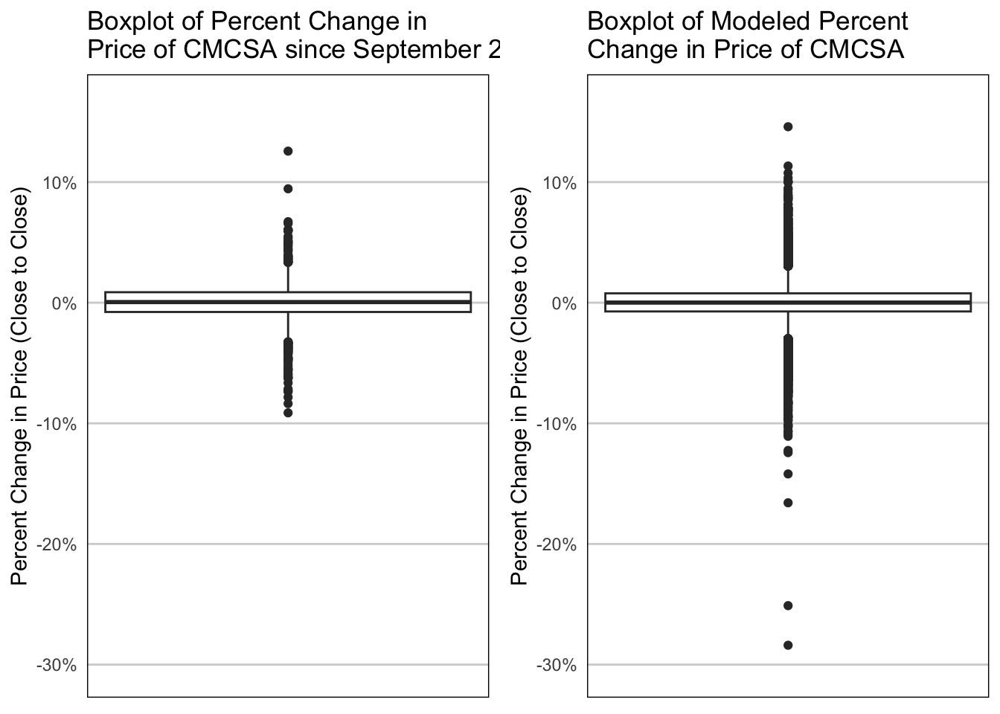
Step 3: The Monte Carlo Simulation
A Monte Carlo simulation allows us to create alternative futures randomly. The idea is that if you simulate enough times, you’ll get an idea of what is possible and what can be expected (read: more likely to occur).
This first plot shows a single random future generated. If the actual price (black) wasn’t plotted, too, one could be fooled into thinking this “future” actually happened.
Code
start_date <- dat %>%arrange(desc(Date)) %>%pull(Date) %>%pluck(21)start_price <- dat %>%arrange(desc(Date)) %>%pull(Close) %>%pluck(21)mc_dat <-tibble(Date =seq.Date(start_date, Sys.Date() -days(1), by ="day"),weekday =weekdays(Date)) %>%filter(!weekday %in%c("Saturday", "Sunday")) %>%mutate(perc_change =c(start_price, sample(evd_dist$percent_change, size =length(Date) -1, replace =TRUE) +1),closing_price =cumprod(perc_change))plot_dat <- dat %>%left_join(mc_dat, by ="Date") %>%filter(Date >=Sys.Date() -months(4)) ggplot(plot_dat, aes(x = Date)) +geom_line(aes(y = Close)) +geom_line(aes(y = closing_price), color ="navy", alpha =0.5) +ggtitle("Creating a Singular Alternative Future for the 'next' 30 days",subtitle =paste0("Simulation begins on ", format(sim_start_date, "%m/%d"),"\nActual price is black; simulated price is navy")) +scale_y_continuous(labels =dollar_format()) +theme(panel.background =element_blank(),panel.grid.major.y =element_line(color ="light gray"),panel.grid.major.x =element_blank(),axis.ticks =element_blank(),panel.border =element_rect(fill =NA, color ="black"))
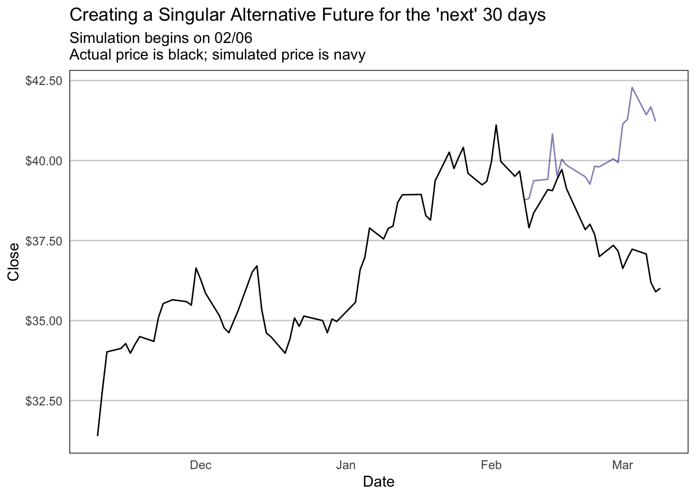
Code
num_sims <-10000mc_dat <-tibble(Date =rep(seq.Date(start_date, Sys.Date() -days(1), by ="day"), num_sims),weekday =weekdays(Date), ) %>%filter(!weekday %in%c("Saturday", "Sunday")) num_days <-dim(mc_dat)[1] / num_simsmc_dat_wide <- mc_dat %>%mutate(rnum =row_number(), sample =rep(1:num_sims, each = num_days),perc_change =sample(evd_dist$percent_change, size =length(Date), replace =TRUE) +1,perc_change =ifelse(rnum %% num_days ==1, start_price, perc_change)) %>%select(Date, sample, perc_change) %>%pivot_wider(names_from = sample, values_from = perc_change) cprod <- mc_dat_wide %>%select(where(is.numeric)) %>%map_dfc(cumprod)mc_dat_final <- cprod %>%mutate(Date = mc_dat_wide$Date) %>%pivot_longer(!Date, names_to ="sample", values_to ="closing_price")plot_dat <- dat %>%left_join(mc_dat_final, by ="Date") %>%filter(Date >=as_date("2022-09-01")) ggplot(plot_dat, aes(x = Date)) +geom_line(aes(y = closing_price, group = sample), color ="navy", alpha =0.15) +geom_line(aes(y = Close)) +ggtitle("Creating 10,000 Alternative Futures for the 'next' 30 days",subtitle =paste0("Simulation begins on ", format(sim_start_date, "%m/%d"),"\nActual price is black; simulated price is navy")) +scale_y_continuous(labels =dollar_format()) +theme(panel.background =element_blank(),panel.grid.major.y =element_line(color ="light gray"),panel.grid.major.x =element_blank(),axis.ticks =element_blank(),panel.border =element_rect(fill =NA, color ="black"))
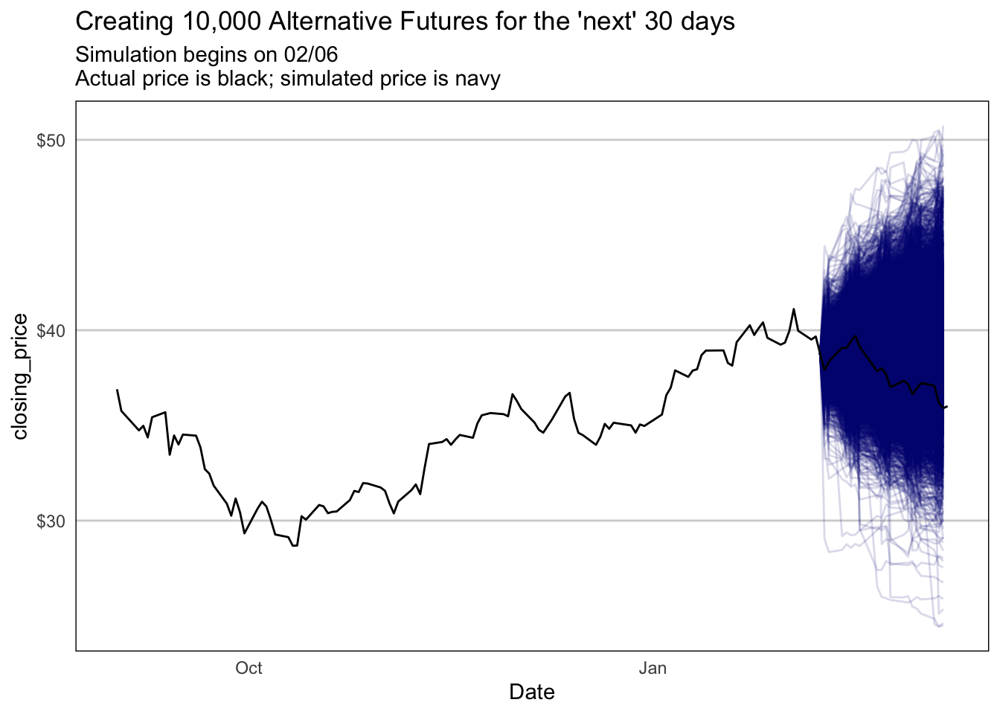
Below you can see the final experimental prices for the 10,000 simulations compared to the actual final price of CMCSA.
Code
hist <-ggplot(plot_dat[plot_dat$Date == (max(plot_dat$Date) -1), ], aes(x = closing_price)) +geom_histogram(fill ="navy", color ="white") +geom_vline(aes(xintercept = Close), color ="red") +ggtitle("Histogram of 10,000 Alternative\nFutures final prices",subtitle ="Actual closing price is red line") +xlab("Closing Price") +scale_x_continuous(labels =dollar_format()) +scale_y_continuous(labels =comma_format()) +theme(panel.background =element_blank(),panel.grid.major.y =element_line(color ="light gray"),panel.grid.major.x =element_blank(),axis.ticks =element_blank(),panel.border =element_rect(fill =NA, color ="black"))boxp <-ggplot(plot_dat[plot_dat$Date == (max(plot_dat$Date) -1), ], aes(x = closing_price)) +geom_boxplot() +geom_vline(aes(xintercept = Close), color ="red") +ggtitle("Boxplot of 10,000 Alternative\nFutures final prices",subtitle ="Actual closing price is red line") +xlab("Closing Price") +scale_x_continuous(labels =dollar_format()) +scale_y_continuous(labels =comma_format()) +theme(panel.background =element_blank(),panel.grid.major.y =element_line(color ="light gray"),panel.grid.major.x =element_blank(),axis.text.y =element_blank(),axis.ticks =element_blank(),panel.border =element_rect(fill =NA, color ="black"))gridExtra::grid.arrange(hist, boxp, nrow =1)